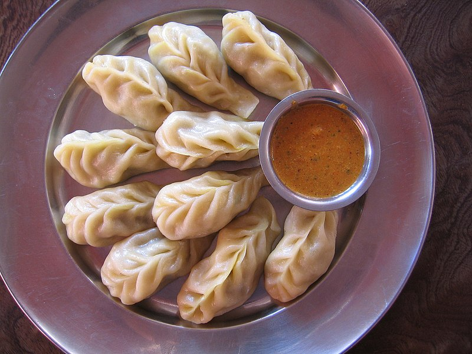

In Newari, one of Nepal’s oldest languages, ‘mome’ means cooking by steaming. ‘Momo’ is to Nepal what pizza is to Italy, and is available in every restaurant, hotel and household of Katmandu and other parts of Nepal. Momo is like Mount Everest – one of the symbols of Nepal. Now its popularity has spread beyond national boundaries and, thanks largely to Nepalese communities living abroad, it is growing popular in other parts of the world, too.

Then steam the momo in the multi-layer pan specially made for the purpose. Pour water into the bottom layer, add salt, garlic, tomato, chili and spices and boil over a stove. Then place the stuffed momo on the upper layers of the steaming pan and cover with the lid. Steam for 15 minutes.
Then comes a no less important step in the preparation: the making of the special momo sauce known as ‘achar’. Mix tomato, chopped onion, chopped green chilies and garlic and cook for ten minutes. Add salt, sesame powder, mustard powder and special herbal spices. The achar is now ready.
After cooking for 15 minutes, turn off the stove. Remove the lid and take out the momo. Place 10 of the pasties onto a plate and add the achar. Pour some of the soup that has been formed in the bottom layer of the utensil into a dish and season with spices. Serve with the momo. Originally, momo was made only with beef, but nowadays mutton, chicken, pork and even vegetables are used in Katmandu.
Chicken Fried Momo
The history of momo in Nepal dates back to as early as the fourteenth century. Momo was initially a Newari food in the Katmandu valley. It was later introduced to Tibet, China and as far away as Japan by a Nepalese princess who was married to a Tibetan king in the late fifteenth century.
Mahedra Shakya is the owner of three popular momo restaurants called ‘Momo Kings’ in Katmandu, which are always packed with punters. Shakya attributes the popularity of his momo to its authentic flavor. ‘ We use the traditional method to make momo. It gives a special, original taste, which people like,’ he says.
Since momo is slowly getting popular in India and other countries, Shakya plans to open momo restaurants in New Delhi, Calcutta and Mumbai in the near future. ‘I am planning to open momo restaurants in at least three cities in India by the end of 2001, and later in some European cities,’ says Shakya.
Momo has become part of Nepalese food habit and culture. As Nepal’s most original and oldest food, it needs to be popularized in the world as well.
Momo are traditionally steamed but can also be deep-fried or pan-fried and cooked in soup. Momo is usually served with chilli garlic sauce and pickled daikon in Tibet. In Nepal, popular dipping sauces include tomato-based chutneys or sesame or peanut or soybean-based sauces called Jhol achar. Sauces can be thick or thin in consistency depending on the eatery (locally called chutney/achār), usually made with tomato or peanut, sesame and soybean as the base ingredient. In Kathmandu valley, the traditional way of serving momo (called momochā or local momo) is ten ping-pong ball-sized round momo drowned in a sauce called jhol achar, infused with Timur pepper (Nepali pepper, a variety of Sichuan pepper). Jhol momo has warm or hot tomato-based broth poured over momo (not cooked in the broth), whereas Jhol achhar is served in-room /cooled temperature. One of the main ingredients of jhol achar is Nepali hog plum (lapsi), but if this is unavailable, lemon or lime juice may be used.To Watch Full RecipeMomo Full Recipe,
Soup momo or mok-thuk (Tibetan) is another way to serve momos, where the momos are either cooked in broth for a type of dumpling soup or steamed momos, which are added to the broth. Pan-fried momo is also known as kothey momo. Steamed momo served in hot sauce is called C-momo. There are also a variety of dumplings of Nepal found in the Indian state of Sikkim and Darjeeling district, including Tingmo and Tiebao.